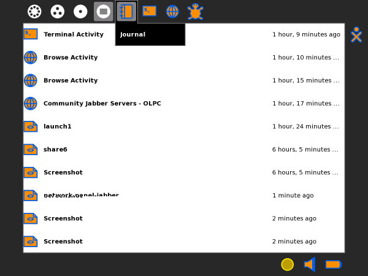
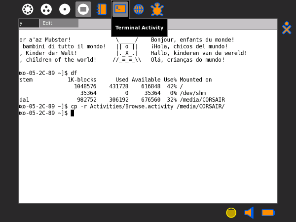
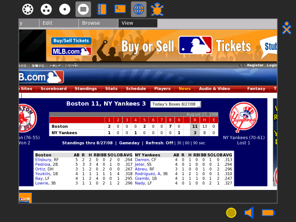
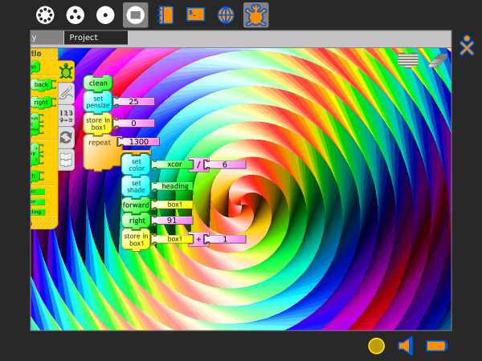

| Collaborer | Index | Mettre fin à une Activité |
Vous pouvez passer d'une Activité à une autre de deux manières:




Note: Vous pouvez utiliser le presse-papiers et le Journal pour copier des données entre les Activités.
| Collaborer | Index | Mettre fin à une Activité |